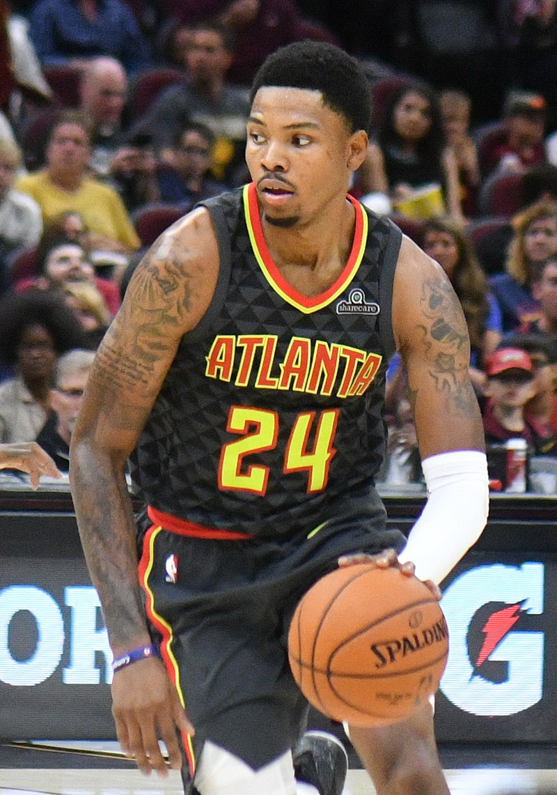

Ра́сселл Уэ́стбрук (англ. Russell Westbrook; род. 12 ноября 1988 года в Лонг-Бич, штат Калифорния)[1] — американский профессиональный баскетболист, выступающий за команду НБА «Лос-Анджелес Лейкерс». Член команды, посвященной 75-летию НБА, 9-кратный участник Матча всех звезд, обладатель награды «Самый ценный игрок НБА» (MVP) в сезоне 2016–17[2].
Уэстбрук стал одним из двух игроков в истории НБА, которым удалось сделать трипл-дабл за сезон, наряду с Оскаром Робертсоном в 1962 году[3]. Он также установил рекорд по количеству трипл-даблов за сезон - 42[4]. В 2020-21 годах Уэстбрук в четвертый раз за пять сезонов сделал трипл-дабл[5], и обошел Робертсона по количеству трипл-даблов за карьеру в истории НБА[6].
С 2006 по 2008 год выступал за баскетбольную команду Калифорнийского университета в Лос-Анджелесе. Был выбран под четвёртым номером на драфте 2008 года. По итогам своего дебютного сезона в НБА был включён в первую сборную новичков. Вместе со сборной США выиграл чемпионат мира в Турции[7] и лондонскую Олимпиаду 2012 года. Участник восьми матчей всех звезд (2011—2013 и 2015—2019).
4 марта 2014 года в матче против «Филадельфии» сделал трипл-дабл (13 очков, 10 подборов и 14 передач), проведя на площадке всего 20 минут и 17 секунд. По информации Elias Sports Bureau меньше времени на трипл-дабл в НБА последний раз было затрачено Джимом Такером в 1955 году. Для Уэстбрука этот трипл-дабл стал восьмым в карьере[8].
В 2015 году Рассел Уэстбрук установил рекорд матчей всех звезд НБА по количеству очков, набранных за половину игры. За 11 минут, проведенных на паркете, набрал 27 очков, а всего Рассел в этой игре набрал 41 очко. Его команда победила команду «Востока» со счетом 163:158, а Уэстбрук был назван самым ценным игроком матча.24, 26 и 27 февраля 2015 года делал трипл-даблы в трёх подряд матчах против «Индианы» (20 очков, 11 подборов и 10 передач), «Финикса» (39 очков, 14 подборов и 11 передач) и «Портленда» (40 очков, 13 подборов и 11 передач). До Уэстбрука последним игроком НБА, кому удавалось сделать три трипл-дабла подряд, был Леброн Джеймс в 2009 году. Третий из этих трипл-даблов стал для Расселла 13-м в карьере. В феврале 2015 года средние показатели Уэстбрука составили 31,2 очка, 9,1 подбора и 10,3 передачи. Расселл стал всего вторым игроком в истории НБА, кому удалось в течение календарного месяца набирать в среднем 30 очков и делать 9 подборов и 10 передач. Ранее это неоднократно удавалось Оскару Робертсону.
Энтони Дэвис
Энтони Дэвис-младший (англ. Anthony Davis, Jr.; род. 11 марта 1993 года в Чикаго, штат Иллинойс) — американский профессиональный баскетболист, выступающий за команду НБА «Лос-Анджелес Лейкерс». Был игроком национального уровня во время учёбы в выпускном классе старшей школы. Он провёл один сезон в составе баскетбольной команды Кентуккийского университета «Кентукки Уайлдкэтс», с которой выиграл чемпионат NCAA и был удостоен звания лучшего игрока первенства. Был выбран на драфте НБА 2012 года под общим первым номером командой «Нью-Орлеан Хорнетс»[1][2][3]. В 2012 году стал чемпионом Олимпийских игр в Лондоне (самый юный в истории олимпийский чемпион по баскетболу), а в 2014 году — победителем чемпионата мира в Испании.Дэвис вырос в южном районе Чикаго, с шестого класса он учился в чартерной школе «Перспективы». У школы не было собственного спортзала, поэтому баскетбольная команда тренировалась в соседней церкви[4]. Обычно будущие звёзды баскетбола оказываются на примете у университетских селекционеров и спортивных СМИ ещё в средней школе, но с Дэвисом ситуация была иной[4]. Он практически не был известен даже на местном уровне до весны 2010 года. Школьная баскетбольная команда, за которую играл Дэвис, выступала в Чикагской лиге общественных школ, не относящейся к элитным спортивным турнирам и практически не попадающей в поле зрения спортивных СМИ[4].
Весной 2010 года, после окончания школьного спортивного сезона, Дэвис стал игроком чикагского любительского клуба «Минститс», владельцем которого является бывший игрок НФЛ Тай Стритс. В это время за Дэвисом наблюдали селекционеры из университетов Лиги горизонта и нескольких других колледжей с баскетбольными командами немного выше среднего уровня[4]. В команде «Минстритс» привыкший играть на позиции защитника Дэвис стал игроком передней линии и очень хорошо справился со своей новой ролью, особенно преуспев в атаке из трёхсекундной зоны и блокировании бросков соперника[4]. Уже на первом турнире, в котором участвовала его новая команда, Дэвис обратил на себя всеобщее внимание. Во многом его прогрессу способствовал быстрый рост, который к лету 2010 года составлял 208 см. К Дэвису стали проявлять серьёзный интерес многие колледжи со всей страны, в частности университеты Кентукки, штата Огайо, Сиракьюза и Де Поля[4].
Лонни Уокер
Лонни Уокер (англ. Lonnie Walker, род. 14 декабря 1998 года) — американский профессиональный баскетболист, выступающий за команду Национальной баскетбольной ассоциации «Сан-Антонио Спёрс». До прихода в НБА играл за баскетбольную команду университета Майами «Майами Харрикейнс». Был выбран «Спёрс» на драфте НБА 2018 года под общим 18 номером.Уокер родился в городе Рединг (штат Пенсильвания), где посещал местную старшую школу. Играя за местную баскетбольную команду он помог ей впервые за 117 летнюю историю завоевать титул чемпиона штата[1]. По окончании обучения он получил предложения спортивной стипендии от таких университетов, как Вилланова, Кентукки, Сиракузы, Аризона[2], однако решил поступить в университет Майами. Он дебютировал за студенческую баскетбольную команду 10 ноября 2017 года. В игре выйдя со скамейки запасных он набрал 10 очков и сделал 5 передач. 5 декабря он впервые вышел на площадку в стартовом составе и установил личный рекорд результативности, набрав в матче против Бостонского университета 25 очков. По итогам сезона он стал самым результативным игроком «Харрикейнс», а его средняя результативность составил 11,5 очков за игру[3] и он был включён в сборную новичков конференции ACC. В межсезонье Уокер решил не продолжать обучение и выставить свою кандидатуру на драфт НБА[4].
На драфте НБА 2018 года Уокер был выбран в первом раунде под общим 18 номером клубом «Сан-Антонио Спёрс» и уже в июле принял участие в Летней лиге НБА за свою новую команду[5]. 11 июля он подписал контракт со «Спёрс»[6]. 6 октября Уокер получил травму мениска[7] и 25 ноября его перевели в фарм-клуб «Остин Спёрс»[8]. Уокер дебютировал в НБА 3 января 2019 года в игре против «Торонто Рэпторс». В ней Лонни отыграл пять минут за которые он успел набрать 3 очка и сделать один подбор, а его команда одержать победу со счётом 125:107[9].
Леброн Рэймон Джеймс
Леброн Рэймон Джеймс (англ. LeBron Raymone James; род. 30 декабря 1984 года, Акрон, Огайо, США)[4] — американский баскетболист, играющий на позиции лёгкого и тяжёлого форварда. Выступает за команду Национальной баскетбольной ассоциации «Лос-Анджелес Лейкерс».
Джеймс является четырёхкратным чемпионом НБА, четырёхкратным самым ценным игроком финала НБА, четырёхкратным самым ценным игроком НБА, самым результативным игроком регулярного чемпионата и новичком года. 13 раз входил в первую сборную всех звёзд НБА, дважды во вторую, 1 раз в третью, пять раз входил в сборную всех звёзд защиты, 16 раз принимал участие в матче всех звёзд, где трижды признавался самым ценным игроком.
Пропустив обучение в университете, Леброн был выбран на драфте 2003 года под общим первым номером командой «Кливленд Кавальерс». В составе «Кливленда» Джеймс провёл 7 сезонов. В 2007 году форвард привёл команду к её первому финалу в истории, где «Кавальерс» вчистую проиграли «Сан-Антонио Спёрс» (0-4). Через два года «Кливленд» вышел в финал Восточной конференции, где уступил «Орландо Мэджик». За время пребывания в составе «Кавс» Джеймс стал самым результативным игроком в истории клуба. Став свободным агентом в 2010 году, Леброн принял решение объединиться с партнёрами по сборной США Дуэйном Уэйдом и Крисом Бошем в составе «Майами Хит». За четыре года проведенных в составе «Хит» Джеймс завоевал два титула чемпиона НБА, два титула самого ценного игрока финальной серии, а также дважды титул самого ценного игрока регулярного сезона. Летом 2014 года Леброн, проведя в составе «Майами» четыре сезона, вернулся в «Кливленд Кавальерс», подписав двухлетний контракт. В первом сезоне после возвращения форварда в родной клуб команда дошла до финала НБА, где уступила в шести матчах «Голден Стэйт Уорриорз». Помимо клубной карьеры, Джеймс также выступал за сборную США на трёх Олимпийских играх, где завоевал два золота и одну бронзу. Форвард также принимал участие в чемпионате мира 2006 года, выиграв бронзу.
В 2008 году вышел документальный фильм «Больше, чем игра» о Джеймсе и его школьной команде. В 2015 году снялся в кинокомедии режиссёра Джадда Апатоу «Девушка без комплексов».
По версии «Forbes», в 2019 году признан самым высокооплачиваемым игроком в НБА[5].
Леброн Джеймс родился 30 декабря 1984 года в Акроне, штат Огайо. Его мать, Глория Джеймс, на тот момент была 16-летней школьницей. Она рассталась с отцом Леброна, Энтони Макклилландом, ещё до рождения сына. Будучи подростком с ребёнком на руках, Глория сумела окончить школу благодаря помощи своей матери Фреды. Семья жила в бедности, матери Леброна приходилось совмещать работу и заботу о сыне, а здоровье его бабушки стремительно ухудшалось, в 1987 году она умерла от сердечного приступа. Несколько лет роль отца в жизни Леброна выполнял Эдди Джексон, с которым встречалась Глория Джеймс. Даже после расставания Глории и Эдди последний продолжал контактировать с Леброном и играть в его жизни важную роль. Первый баскетбольный опыт Леброн Джеймс получил в три года, когда мать подарила ему на Рождество небольшое баскетбольное кольцо и мяч, которые стали его любимой игрушкой[6].
Кент Бэйзмор

Кент Бэйзмор (англ. Kent Bazemore; род. 1 июля 1989 года в Келфорде, Северная Каролина, США) — американский профессиональный баскетболист, выступающий в команде Национальной баскетбольной ассоциации «Лос-Анджелес Лейкерс».
Голден Стэйт Уорриорз (2012—2014)
После того, как Кент Бэйзмор не был выбран на драфте НБА 2012 года, он выступал в Летней лиге НБА за «Оклахома-Сити Тандер» в Орландо и «Голден Стэйт Уорриорз» в Лас-Вегасе. 26 июля 2012 года он подписал контракт с «Голден Стэйт»[1]. Во время своего дебютного сезона НБА Кент Бэйзмор выступал за команду лиги развития Санта-Круз Уорриорз[2]. 15 марта 2013 года в проигранном матче против «Чикаго Буллз» он установил личный рекорд, набрав 14 очков[3].
В июле 2013 года Кент Бэйзмор выступал в Летней лиге НБА за «Голден Стэйт Уорриорз». В феврале 2014 года он несколько раз был отправлен в Лигу развития[4].
Лос-Анджелес Лейкерс (2014)
19 февраля 2014 года Кент Бэйзмор был обменян вместе с Маршоном Бруксом в «Лос-Анджелес Лейкерс» на Стива Блэйка[5]. 7 апреля стало известно, что он пропустит остаток сезона из-за разрыва связки на правой ноге[6].
Атланта Хокс (2014—2019)
23 сентября 2014 года Бэйзмор подписал контракт с «Атланта Хокс»[7]. 28 марта 2015 года в проигранном матче против Нью-Орлеан Пеликанс Кент Бэйзмор впервые в сезоне набрал 20 очков[8].
7 ноября 2015 года в выигранном матче против «Вашингтон Уизардс» он впервые за карьеру НБА набрал 25 очков[9]. 14 декабря в проигранном матче против «Майами Хит» Кент Бэйзмор обновил свой рекорд результативности в НБА, который теперь составляет 28 очков[10].
7 июля 2016 года баскетболист продлил контракт с клубом[11]. 2 марта 2018 года Бэйзмор улучшил свой рекорд результативности, забросив 29 очков в игре против «Голден Стэйт Уорриорз»[12].
Портленд Трэйл Блэйзерс (2019—2020)
24 июня 2019 года Бэйзмор перешёл в клуб «Портленд Трэйл Блэйзерс» в результате обмена на Эвана Тёрнера[13].
Сакраменто Кингз (2020)
20 января 2020 года Бэйзмор был отправлен вместе с Энтони Толливером и двумя будущими выборами во втором раунде драфта в «Сакраменто Кингз», взамен «Портленд» получили Тревора Аризу, Уэньина Гэбриэла и Калеба Суонигана[14].
Возвращение в «Голден Стэйт Уорриорз» (2020—н.в.)
1 декабря 2020 года Бэйзмор подписал однолетний контракт со своим первым клубом в лиге «Голден Стэйт Уорриорз»[15].
Кендрик Мелвин Нанн
Кендрик Мелвин Нанн (англ. Kendrick Melvin Nunn; род. 3 августа 1995 года в Чикаго, штат Иллинойс, США) — американский профессиональный баскетболист, выступающий за команду Национальной баскетбольной ассоциации «Лос-Анджелес Лейкерс».Средняя школа
Кендрик Нанн учился в средней школе Академия Нила Симеона в Чикаго. Нанн выступал в баскетбольной команде академии, которая четыре года подряд выигрывала титул чемпиона штата Иллинойс по баскетболу[1]. На четвертом курсе школы его игровой номер 20 был выведен из обращения баскетбольной командой Академии Нила Семиона[2].
Во время учебы на первом курсе академии Кендрику Нанну была предложена баскетбольная стипендия от Сент-Луисского университета[3]. Кендрик рассматривал варианты получения высшего образования в Иллинойсском университете в Урбане-Шампейне, университете Маркетта, университете Мемфис, университете штата Огайо, Техасском университете A&M, университете штата Оклахома, Калифорнийском университете в Лос-Анджелесе[4][5].
В августе 2011 года Нанн устно договорился о поступлении в Техасский университет A&M[6]. Однако через два месяца Кендрик отказался от намерения учится в Техасском университете и решил продолжить выбирать место учёбы. Тренер Академии Нила Симеона сказал, что Кендрик считает, что он слишком рано сделал выбор и хочет изучит все варианты[7].
После официального визита в Иллинойсский университет в Урбане-Шампейн Кендрик Нанн объявил 15 сентября 2012 года, что он продолжит там учебу и будет защищать цвета «Иллинойс» в NCAA[4].
Студенческая карьера
На первом курсе Кендрик Нанн сыграл за «Иллинойс» в сезоне 2013/2014 все 35 матчей, в 12 последних матчей он выходил в стартовом составе[1]. 9 февраля 2014 года Кендрик в поединке против баскетбольной команды университета штата Пенсильвания в первый раз сыграл в стартовой пятерки и набрал 19 очков.[8][9]. 19 февраля 2014 года во встречи против «Миннесота Голден Гоферс» Нанн повторил свой рекорд результативности, равный 19 очкам[10]. Спустя 5 дней его назвали новичком недели конференции Big Ten[11][12]. Кендрик Нанн помог «Иллинойс» последовательно победить баскетбольную команду университета Небраски-Линкольна[13] и «Мичиган Стэйт Спартанс»[14]. На счету игрока в указанных матчах было 10,5 очка за игру, 4,5 подбора за игру, 3,5 передачи за игру, и поэтому 3 марта 2014 года его второй раз назвали новичком недели конференции Big Ten[15]. По окончании сезона Кендрик Нанн вошёл в сборную новичков конференции Big Ten[16][17].
На втором курсе в сезоне 2014/2015 Кендрик Нанн сыграл 33 матча, из которых 24 раза был игроком стартовой пятерки[1]. 14 января 2015 года в матче против баскетбольной команды Северо-Западного университета Нанн обновил свой рекорд результативности до 25 очков[18]. 18 января 2015 года в матче против «Индиана Хузерс» игрок набрал 24 очка[19].
На третьем курсе в сезоне 2015/2016 Кендрик Нанн сыграл 28 матчей, из которых 25 раз был игроком стартового состава[20]. 5 декабря 2015 года Кендрик во встречи против баскетбольной команды Западно-Каролинского университета впервые в NCAA набрал 27 очков[21]. 9 декабря в поединке против «Йель Бульдогс» он обновил свой рекорд результативности до 28 очков[22].
24 мая 2016 года Кендрик Нанн был отчислен из баскетбольной команды Иллинойсского университета в Урбане-Шампейне[23] после того, как он признал себя виновным в совершении преступления мелкой степени тяжести два месяца назад[note 1]. Примерно через месяц Кеник перевелся в Оклендский университет[25], где имел возможность возобновить карьеру в «Окленд Голден Гриззлис»[note 2]. Согласно трансфертным правилам NCAA Кендрик Нанн пропустил сезон 2016/2017[27].
 Леброн Рэймон Джеймс (англ. LeBron Raymone James; род. 30 декабря 1984 года, Акрон, Огайо, США)[4] — американский баскетболист, играющий на позиции лёгкого и тяжёлого форварда. Выступает за команду Национальной баскетбольной ассоциации «Лос-Анджелес Лейкерс».
Джеймс является четырёхкратным чемпионом НБА, четырёхкратным самым ценным игроком финала НБА, четырёхкратным самым ценным игроком НБА, самым результативным игроком регулярного чемпионата и новичком года. 13 раз входил в первую сборную всех звёзд НБА, дважды во вторую, 1 раз в третью, пять раз входил в сборную всех звёзд защиты, 16 раз принимал участие в матче всех звёзд, где трижды признавался самым ценным игроком.
Пропустив обучение в университете, Леброн был выбран на драфте 2003 года под общим первым номером командой «Кливленд Кавальерс». В составе «Кливленда» Джеймс провёл 7 сезонов. В 2007 году форвард привёл команду к её первому финалу в истории, где «Кавальерс» вчистую проиграли «Сан-Антонио Спёрс» (0-4). Через два года «Кливленд» вышел в финал Восточной конференции, где уступил «Орландо Мэджик». За время пребывания в составе «Кавс» Джеймс стал самым результативным игроком в истории клуба. Став свободным агентом в 2010 году, Леброн принял решение объединиться с партнёрами по сборной США Дуэйном Уэйдом и Крисом Бошем в составе «Майами Хит». За четыре года проведенных в составе «Хит» Джеймс завоевал два титула чемпиона НБА, два титула самого ценного игрока финальной серии, а также дважды титул самого ценного игрока регулярного сезона. Летом 2014 года Леброн, проведя в составе «Майами» четыре сезона, вернулся в «Кливленд Кавальерс», подписав двухлетний контракт. В первом сезоне после возвращения форварда в родной клуб команда дошла до финала НБА, где уступила в шести матчах «Голден Стэйт Уорриорз». Помимо клубной карьеры, Джеймс также выступал за сборную США на трёх Олимпийских играх, где завоевал два золота и одну бронзу. Форвард также принимал участие в чемпионате мира 2006 года, выиграв бронзу.
В 2008 году вышел документальный фильм «Больше, чем игра» о Джеймсе и его школьной команде. В 2015 году снялся в кинокомедии режиссёра Джадда Апатоу «Девушка без комплексов».
По версии «Forbes», в 2019 году признан самым высокооплачиваемым игроком в НБА[5].
Леброн Джеймс родился 30 декабря 1984 года в Акроне, штат Огайо. Его мать, Глория Джеймс, на тот момент была 16-летней школьницей. Она рассталась с отцом Леброна, Энтони Макклилландом, ещё до рождения сына. Будучи подростком с ребёнком на руках, Глория сумела окончить школу благодаря помощи своей матери Фреды. Семья жила в бедности, матери Леброна приходилось совмещать работу и заботу о сыне, а здоровье его бабушки стремительно ухудшалось, в 1987 году она умерла от сердечного приступа. Несколько лет роль отца в жизни Леброна выполнял Эдди Джексон, с которым встречалась Глория Джеймс. Даже после расставания Глории и Эдди последний продолжал контактировать с Леброном и играть в его жизни важную роль. Первый баскетбольный опыт Леброн Джеймс получил в три года, когда мать подарила ему на Рождество небольшое баскетбольное кольцо и мяч, которые стали его любимой игрушкой[6].
Леброн Рэймон Джеймс (англ. LeBron Raymone James; род. 30 декабря 1984 года, Акрон, Огайо, США)[4] — американский баскетболист, играющий на позиции лёгкого и тяжёлого форварда. Выступает за команду Национальной баскетбольной ассоциации «Лос-Анджелес Лейкерс».
Джеймс является четырёхкратным чемпионом НБА, четырёхкратным самым ценным игроком финала НБА, четырёхкратным самым ценным игроком НБА, самым результативным игроком регулярного чемпионата и новичком года. 13 раз входил в первую сборную всех звёзд НБА, дважды во вторую, 1 раз в третью, пять раз входил в сборную всех звёзд защиты, 16 раз принимал участие в матче всех звёзд, где трижды признавался самым ценным игроком.
Пропустив обучение в университете, Леброн был выбран на драфте 2003 года под общим первым номером командой «Кливленд Кавальерс». В составе «Кливленда» Джеймс провёл 7 сезонов. В 2007 году форвард привёл команду к её первому финалу в истории, где «Кавальерс» вчистую проиграли «Сан-Антонио Спёрс» (0-4). Через два года «Кливленд» вышел в финал Восточной конференции, где уступил «Орландо Мэджик». За время пребывания в составе «Кавс» Джеймс стал самым результативным игроком в истории клуба. Став свободным агентом в 2010 году, Леброн принял решение объединиться с партнёрами по сборной США Дуэйном Уэйдом и Крисом Бошем в составе «Майами Хит». За четыре года проведенных в составе «Хит» Джеймс завоевал два титула чемпиона НБА, два титула самого ценного игрока финальной серии, а также дважды титул самого ценного игрока регулярного сезона. Летом 2014 года Леброн, проведя в составе «Майами» четыре сезона, вернулся в «Кливленд Кавальерс», подписав двухлетний контракт. В первом сезоне после возвращения форварда в родной клуб команда дошла до финала НБА, где уступила в шести матчах «Голден Стэйт Уорриорз». Помимо клубной карьеры, Джеймс также выступал за сборную США на трёх Олимпийских играх, где завоевал два золота и одну бронзу. Форвард также принимал участие в чемпионате мира 2006 года, выиграв бронзу.
В 2008 году вышел документальный фильм «Больше, чем игра» о Джеймсе и его школьной команде. В 2015 году снялся в кинокомедии режиссёра Джадда Апатоу «Девушка без комплексов».
По версии «Forbes», в 2019 году признан самым высокооплачиваемым игроком в НБА[5].
Леброн Джеймс родился 30 декабря 1984 года в Акроне, штат Огайо. Его мать, Глория Джеймс, на тот момент была 16-летней школьницей. Она рассталась с отцом Леброна, Энтони Макклилландом, ещё до рождения сына. Будучи подростком с ребёнком на руках, Глория сумела окончить школу благодаря помощи своей матери Фреды. Семья жила в бедности, матери Леброна приходилось совмещать работу и заботу о сыне, а здоровье его бабушки стремительно ухудшалось, в 1987 году она умерла от сердечного приступа. Несколько лет роль отца в жизни Леброна выполнял Эдди Джексон, с которым встречалась Глория Джеймс. Даже после расставания Глории и Эдди последний продолжал контактировать с Леброном и играть в его жизни важную роль. Первый баскетбольный опыт Леброн Джеймс получил в три года, когда мать подарила ему на Рождество небольшое баскетбольное кольцо и мяч, которые стали его любимой игрушкой[6].